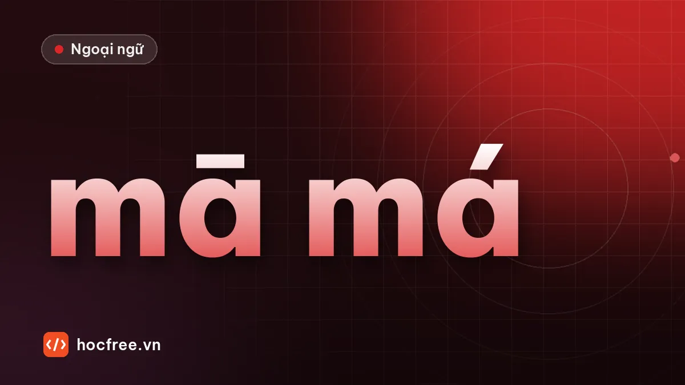

4 thanh điệu và thanh nhẹ tiếng Trung: so sánh với dấu tiếng Việt
Độ cao của 4 thanh theo thang 5 bậc, so sánh và phân biệt với dấu tiếng Việt, thanh nhẹ, quy tắc đặt dấu thanh và bài luyện cặp thanh.

Học xong bài này, bạn sẽ
- Đọc đúng độ cao 4 thanh và thanh nhẹ
- Đặt dấu thanh đúng nguyên âm
- Đọc 20 tổ hợp hai thanh thường gặp
Nên học trước: Vận mẫu và quy tắc viết pinyin
Nội dung bài viết
Cùng một âm tiết ma nhưng đổi thanh là đổi nghĩa: 妈 mā (mẹ), 麻 má (tê), 马 mǎ (ngựa), 骂 mà (mắng). Người Việt có lợi thế vì tiếng Việt cũng có thanh điệu, nhưng cũng chính vì thế mà hay "dịch" thanh Trung sang dấu Việt và đọc lệch. Bài này giúp bạn nắm đúng độ cao của từng thanh.
Thang độ cao 5 bậc
Hãy tưởng tượng giọng bạn có 5 mức: 1 là thấp nhất, 5 là cao nhất mà vẫn thoải mái.
| Thanh | Dấu | Độ cao | Mô tả | Ví dụ |
|---|---|---|---|---|
| Thanh 1 | ā | 5 → 5 | Cao, bằng, kéo dài đều | 妈 mā (mẹ) |
| Thanh 2 | á | 3 → 5 | Từ giữa đi lên cao, như khi hỏi lại "Hả?" | 麻 má (tê) |
| Thanh 3 | ǎ | 2 → 1 → 4 | Xuống thấp rồi lên; trong câu thường chỉ đọc phần thấp | 马 mǎ (ngựa) |
| Thanh 4 | à | 5 → 1 | Từ rất cao rơi mạnh, dứt khoát | 骂 mà (mắng) |
| Thanh nhẹ | a | ngắn, nhẹ | Không dấu, đọc nhẹ và ngắn, độ cao phụ thuộc chữ trước | 吗 ma (trợ từ hỏi) |
So với dấu tiếng Việt: giống và khác
| Thanh | Người Việt hay đọc thành | Cách sửa |
|---|---|---|
| Thanh 1 | Thanh ngang của tiếng Việt, nhưng thấp | Nâng cao giọng hơn hẳn, như khi hát nốt cao và giữ |
| Thanh 2 | Dấu sắc | Khá gần, nhưng bắt đầu từ giữa và đi lên đều, không gắt, không ngắt |
| Thanh 3 | Dấu hỏi | Thanh 3 thấp hơn dấu hỏi. Khi chưa chắc, cứ đọc thật thấp và trầm |
| Thanh 4 | Dấu huyền (lỗi phổ biến nhất) | Dấu huyền thấp và êm. Thanh 4 phải bắt đầu rất cao rồi rơi gọn, giống như ra lệnh "Đi!" |
Thanh nhẹ
Thanh nhẹ không có dấu. Nó xuất hiện ở:
- Trợ từ: 吗 ma, 呢 ne, 吧 ba, 了 le, 的 de.
- Âm tiết thứ hai của từ lặp: 爸爸 bàba, 妈妈 māma, 谢谢 xièxie.
- Một số từ hai âm tiết quen dùng: 朋友 péngyou, 东西 dōngxi (đồ vật).
Đọc thanh nhẹ ngắn bằng nửa thanh thường, không nhấn. Đừng cố đọc nó thành thanh 1 hay thanh 4.
Quy tắc đặt dấu thanh
Dấu thanh đặt trên nguyên âm chính của vần, theo thứ tự ưu tiên:
- Có a thì đặt trên a: hǎo, kuài, xiǎo.
- Không có a, có o hoặc e thì đặt trên o/e: duō, xiè, kǒu, běi.
- Vần iu và ui: đặt trên chữ đứng sau: liù, duì, guì, jiǔ.
- Đặt trên i thì bỏ dấu chấm của i: nǐ, yī, xìn.
Từ vựng luyện thanh
| Chữ Hán | Pinyin | Nghĩa | Tổ hợp thanh |
|---|---|---|---|
| 中国 | Zhōngguó | Trung Quốc | 1 + 2 |
| 今天 | jīntiān | hôm nay | 1 + 1 |
| 学生 | xuésheng | học sinh | 2 + nhẹ |
| 朋友 | péngyou | bạn bè | 2 + nhẹ |
| 老师 | lǎoshī | thầy cô | 3 + 1 |
| 米饭 | mǐfàn | cơm | 3 + 4 |
| 汉语 | Hànyǔ | tiếng Hán | 4 + 3 |
| 再见 | zàijiàn | tạm biệt | 4 + 4 |
| 工作 | gōngzuò | công việc | 1 + 4 |
| 名字 | míngzi | tên | 2 + nhẹ |
Âm Hán Việt giúp nhớ nghĩa: 中国 Trung Quốc, 学生 học sinh, 老师 lão sư, 汉语 Hán ngữ, 工作 công tác. Nhưng dấu tiếng Việt không cho biết thanh tiếng Trung: "học" có dấu nặng nhưng 学 là thanh 2.
Luyện 20 tổ hợp hai thanh
Đọc to mỗi hàng 3 lần. Tiếng Trung chủ yếu là từ hai âm tiết, nên luyện theo cặp hiệu quả hơn luyện từng thanh lẻ.
| + thanh 1 | + thanh 2 | + thanh 3 | + thanh 4 | + nhẹ | |
|---|---|---|---|---|---|
| Thanh 1 | jīntiān | Zhōngguó | shēntǐ | gōngzuò | māma |
| Thanh 2 | míngtiān | xuéxí | píngguǒ | xuéxiào | péngyou |
| Thanh 3 | lǎoshī | Měiguó | (xem bài biến điệu) | mǐfàn | wǒmen |
| Thanh 4 | miànbāo | dàxué | Hànyǔ | zàijiàn | bàba |
Nghĩa: thân thể, ngày mai, học tập, quả táo, trường học, nước Mỹ, chúng tôi, bánh mì, đại học.
Luyện tập
Bài 1. Đặt dấu thanh đúng vị trí: hao (thanh 3), dui (thanh 4), liu (thanh 4), xie (thanh 4), kou (thanh 3), gui (thanh 4), shui (thanh 3), jiu (thanh 3), mei (thanh 2), xue (thanh 2).
Bài 2. Từ nào có thanh nhẹ? 妈妈, 中国, 朋友, 汉语, 谢谢, 名字, 老师.
Xem đáp án
Bài 1. hǎo, duì, liù, xiè, kǒu, guì, shuǐ, jiǔ, méi, xué.
Bài 2. 妈妈 māma, 朋友 péngyou, 谢谢 xièxie, 名字 míngzi.
Kiểm tra cuối bài
1. Thanh nào hay bị người Việt đọc thành dấu huyền?
2. Trong guì, vì sao dấu đặt trên i?
3. Âm Hán Việt có cho biết thanh điệu tiếng Trung không?
Xem đáp án
- Thanh 4.
- Vần ui đặt dấu trên chữ đứng sau.
- Không. Âm Hán Việt giúp nhớ nghĩa, thanh phải học riêng.
Tổng kết và ôn tập
- Thanh 1 cao bằng, thanh 2 đi lên, thanh 3 thấp, thanh 4 rơi mạnh, thanh nhẹ ngắn nhẹ.
- Dấu đặt theo thứ tự a → o/e → chữ sau trong iu, ui.
- Luyện theo cặp hai thanh, phóng đại độ cao khi mới học.
Bài ôn: mỗi ngày đọc bảng 20 tổ hợp một lần, ghi âm và so với phát âm của từ điển. Bài tiếp theo: biến điệu.
Bài tập thực hành
- Đọc dãy mā má mǎ mà ma mỗi ngày 2 phút, ghi âm và so với âm mẫu.
- Đánh dấu thanh cho 10 âm tiết trong phần luyện tập rồi đối chiếu đáp án.
Làm xong bài tập mới chuyển sang bài tiếp theo: đọc to, tự viết chữ Hán và tự chấm đáp án là cách duy nhất để nhớ lâu.